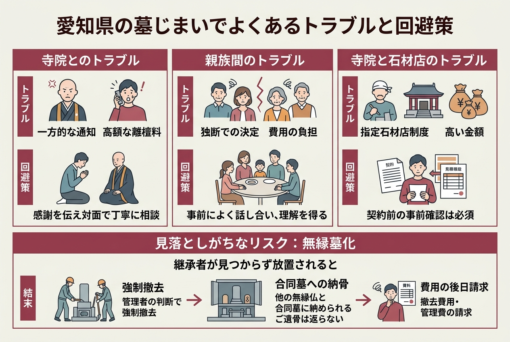

【2026年最新】愛知県の墓じまい完全ガイド｜費用相場・流れ・依頼できる業者9社を徹底比較

愛知県で「墓じまい」を考え始めると、相場が見えにくくて足踏みしてしまう人が多いはず。
この記事では、愛知県内で墓じまいに対応している9社の料金・特徴・対応エリアを並べて整理しました。
あわせて、改葬許可申請の手順、閉眼供養の費用、親族トラブルの避け方まで、調べ尽くした内容を1ページにまとめています。
2026年4月時点で公式サイトに掲載されていた料金と、政府統計に基づいた最新データだけを使っています。
結論｜愛知県の墓じまいは「費用感」と「業者選び」を押さえれば後悔しない
先に結論からお伝えします。
愛知県で墓じまいを進めるなら、押さえるべきポイントは大きく3つだけです。
- 1㎡あたりの撤去工事費は5万円〜15万円が現実的なレンジ
- 業者選びは「料金の透明性」「許可・資格」「アフター供養」の3軸でチェック
- 親族と墓地管理者への事前相談を、見積り依頼より先に済ませる
料金だけを比べて即決するのは危険です。
追加費用の有無、産業廃棄物の処理ルート、閉眼供養の手配可否まで確認したほうが、結果的に安く・揉めずに済みます。
「業界最安値」って書かれた業者に頼んでも本当に大丈夫なんでしょうか？
価格表に「お見積り後の追加料金なし」と明記されているか、廃材のリサイクルルートが説明されているかを確認してください。両方そろっていれば、最安値帯でも安心して任せられます。
愛知県の墓じまいが10年で3.8倍に｜急増の背景データ
愛知県の墓じまいは、ここ10年で爆発的に増えています。
感覚値ではなく、政府統計に裏付けられた数字として、愛知県は全国でも墓じまい急増エリアの一つです。
件数はどれくらい増えている？
矢田石材店が公表している地域データによると、2022年の愛知県の墓じまい件数は6,096件。
10年前と比較すると、なんと3.8倍に増えています。
全国規模で見ても、過去25年間で改葬件数は2.5倍以上に伸びている、というのがティアが引用する政府統計（e-Stat）の結果です。
増加の理由は「継承者不足」と「価値観の変化」
背景はシンプルです。
子や孫がお墓の継承者になれない、または継承するつもりがないケースが増えているから。
愛知県内の事業者に寄せられている声としては、「子どもたちに負担をかけたくない」「遠方に住む子に管理は難しい」「将来、お墓を見る人がいなくなったらどうしよう」といった内容が代表的です。
お墓じまいは、決して先祖を粗末にする行為ではありません。むしろ、現代を生きる私たちが、故人への感謝と敬意を込めて行う、新しい形の供養なのです。
矢田石材店 公式サイトよりこの感覚は、相談現場でもよく語られている言葉です。
後ろめたさより、放置による無縁墓化のほうが現実的なリスクになっていると意識されつつあります。
愛知県の墓じまい費用相場｜1㎡5万円から請け負う業者も
愛知県内の各社が公表している料金を並べてみると、撤去工事だけで5万円〜15万円／㎡、永代供養や閉眼供養まで含めた総額は20万円台〜が現実的なレンジです。
ただし、お墓のサイズや立地、墓誌の有無、霊園と石材店の関係性によって幅は広がります。
撤去工事の料金幅
1㎡あたりの撤去費用を、各社の公表値で比較するとこうなります。
| 業者 | 撤去工事の最低料金 | 備考 |
|---|---|---|
| 近藤石材店 | 50,000円／㎡（税別）〜 | 名古屋・岡崎エリア |
| 終活・お墓の相談所いのり | 65,000円／㎡（税別）〜 | 2㎡なら130,000円〜 |
| 墓じまいサポート | 100,000円（1㎡8寸）〜 | 業界最安値を掲げる |
| 矢田石材店 | 132,000円（Sサイズ）〜 | 職人2名で施工する基本構成 |
| 海の散骨舎 | 125,000円（税込137,500円） | 実例の墓石解体処分込み |
| 墓じまいフルサポート | 150,000円（税込165,000円）〜 | 1㎡8寸サイズ基準 |
| 涙そうそう | 165,000円（2㎡）〜 | 魂抜きは33,000円〜 |
ぱっと見では近藤石材店の50,000円／㎡が最安に映ります。
ただし、墓地の形状（重機が入るか）や石の量で価格は変動するため、最終的にはどの業者も「現地確認後の見積り」が必須です。
永代供養・閉眼供養・離檀料の内訳
撤去工事以外で発生する代表的な費用は、永代供養料・閉眼供養（魂抜き）のお布施・離檀料の3つ。
矢田石材店の最安構成では、工事費（Sサイズ）132,000円＋リサイクル費16,500円＋セルフプラン0円＋はなえみ合祀墓60,000円＝合計208,500円（税込）から墓じまいが可能、と公表されています。
閉眼供養のお布施は、いのりの解説では「3万円〜10万円程度が一般的」とされています。
金額は決まっていません。
あくまで感謝の気持ちなので、お寺との関係性のなかで決まる、というのが実情です。
離檀料って、絶対に払わないといけないものなんですか？
いのりの解説によれば、離檀料に法的な支払い義務はなく、話し合いの結果で決まります。一部の宗派では「離檀料を頂くような指導や取り決めはなく、当事者間の話し合いによって決まるもの」という見解も出ています。
「異様に安い価格」だけを掲げる業者には注意が必要です。墓じまいフルサポートの注意喚起によると、不法投棄や、魂抜きの手配で高額請求につながるケースが報告されています。見積書に追加費用の有無が明記されているかを必ず確認してください。

愛知県で墓じまいを進める6ステップ
「何から手をつければいいかわからない」という方のために、愛知県内の各社が公表している進め方を整理しました。
順番を守って進めることで、トラブルや手戻りはほぼゼロになります。
家族・親族との合意形成
墓じまいの意思を最初に共有する相手は、業者でも役所でもなく親族です。
「なぜ墓じまいをしたいのか」「自分で進めたいのか、協力してほしいのか」を率直に伝えるのが基本、といのりは解説しています。
墓地管理者・寺院への事前相談
寺院墓地なら住職、霊園なら管理事務所に意向を伝えます。
事後報告は離檀料トラブルの最大要因なので、書類のやり取りが発生する前に必ず相談しておきます。
新しい供養先の選定と見積り依頼
永代供養墓、納骨堂、樹木葬、散骨、手元供養、建墓のいずれにするかを決めます。
同時に、墓石撤去を依頼する石材店・墓じまい業者を2〜3社ピックアップして相見積りを取ります。
改葬許可申請（行政手続き）
改葬許可申請書、埋葬証明書、受入証明書の3枚を、お墓のある市区町村の役所に提出します。
愛知県内は名古屋市16区役所をはじめ、各市役所・町村役場の窓口またはWebからフォームを入手できます。
閉眼供養と墓石撤去工事
僧侶による閉眼供養（魂抜き）を行い、墓石を「単なる物体」に戻してから解体工事に入ります。
依頼日から起算して1ヶ月〜1ヶ月半ほどで完了するのが一般的、と墓じまいサポートは案内しています。
新しい供養先への納骨・法要
取り出したご遺骨を、永代供養墓や樹木葬、散骨などの新しい供養先へ納めます。
納骨式の法要は、僧侶にお願いするのが一般的です。
- 改葬許可申請書（市区町村の役所が発行）
- 埋葬証明書（現在の墓地の管理者が発行）
- 受入証明書（新しい供養先の管理者が発行）
- 家族の同意を確認できるメモや議事録
- 見積書（業者から取得）

愛知県の墓じまい業者・石材店9社の特徴比較
ここからは、愛知県内で墓じまいを依頼できる9社を一覧にまとめます。
料金・対応エリア・特徴を横並びで見ることで、自分の状況に合う業者の絞り込みがぐっとラクになります。
| 業者名 | 料金の目安 | 強み |
|---|---|---|
| 矢田石材店 | 208,500円〜（合祀墓含む最安構成） | 墓石100％再利用・はなえみ墓園31か所 |
| 墓じまいサポート | 1㎡8寸 100,000円〜 | 業界最安値・JA指定業者・浄土真宗閉眼供養無料 |
| 墓じまいフルサポート | 150,000円（税込165,000円）〜 | 僧侶監修・地元密着 |
| ティア | 要相談（無料見積り） | 愛知発祥の終活ワンストップ |
| 涙そうそう | 2㎡165,000円〜 | 料金シミュレーター・東海地域に強い |
| 近藤石材店 | 50,000円／㎡（税別）〜 | 大正2年創業・伝統工芸士在籍 |
| 海の散骨舎 | 137,500円（税込）＋散骨費 | 散骨と墓じまいワンセット |
| 終活・お墓の相談所いのり | 1㎡65,000円（税別）〜 | 無料相談・業界屈指の相見積り対応 |
| 株式会社 美匠 | 要見積り | 愛知県内の事例多数・無縁塔解体も対応 |
料金の数字だけを単純比較せず、対応エリア・付帯サービス・自分の宗派との相性で絞っていくのがおすすめです。
矢田石材店｜100％再利用とはなえみ墓園で循環型の墓じまい
愛知県の墓じまい業者の中で、データの透明性と独自性が際立っているのが矢田石材店です。
1955年に岡崎市で創業し、すでに70年。
建設業許可・産業廃棄物収集運搬業許可・産業廃棄物中間処理許可をすべて取得していて、お墓ディレクター1級・2級も在籍しています。
- 墓石を100％再資源化（道路の路盤材として再利用）
- 愛知県内31か所の「はなえみ墓園」で永代供養まで一貫対応
- 料金体系がサイズ別・代行プラン別に明示されていて追加費用が読みやすい
- 個別墓の年間管理費は1万円と負担が軽い
料金は工事費（Sサイズ）132,000円・Mサイズ264,000円・Lサイズ396,000円の3段階。
そこにリサイクル費（1トンあたり16,500円）と、手続き代行のセルフプラン（0円）／手続き支援プラン（66,000円）／完全代行プラン（165,000円）を組み合わせる仕組みです。
はなえみ墓園の合祀墓は60,000円から。
工事費（S）132,000円＋リサイクル費16,500円＋セルフプラン0円＋はなえみ合祀墓60,000円＝合計208,500円（税込）。
矢田石材店の公式サイトに掲載されている、最も基本的なプランの試算です。
はなえみ墓園は名古屋市の平和公園、一宮、阿久比、豊川、知多、岡崎、岡崎東、蒲郡など愛知県全域に展開しています。
「お住まいの近くで永代供養」を実現したい人に向いている選択肢です。
連絡先は0120-336-772（岡崎本店）。
名古屋ショールームは名東区平和が丘2-213にあります。
詳しくは公式サイトのお墓じまい紹介ページを確認してください。
墓じまいサポート（株式会社菩提樹）｜業界最安値10万円からの墓じまい
「とにかく相場の下限を狙いたい」という人に注目してほしいのが、墓じまいサポートです。
運営しているのは平成19年に仏壇の修理・復元事業で創業した株式会社菩提樹。
仏壇施工で培った繊細な作業を、墓石撤去の現場でも活かしているのが特徴です。
愛知県名古屋市を拠点に、尾張・知多・西三河・東三河まで愛知県全域に対応しています。
料金は1㎡の8寸サイズ（一般的なサイズ）で100,000円から。
同社が公開している比較表では、A社200,000円〜・B社150,000円〜と並べて、業界最安値であることをアピールしています。
- 代表が僧侶の会社で、供養の心を大切にした施工
- JAの指定業者として安心感がある
- 浄土真宗式の閉眼供養なら無料サービス
- 取り上げたご遺骨を洗浄して新しい納骨袋に入れて返却
- 手元供養のための粉骨にも対応（粉骨は有料）
コミコミ価格に含まれているのは、管理場所の確認、改葬手続きのサポート、解体作業、廃材処分・整地、骨壷出し、施工完了後の写真送付、改葬許可書の申請、お車代、寺院・霊園への説明まで。
追加で発生するのは僧侶の手配・魂抜き・お布施で、3つ合わせて宗派ごとに対応する仕組みです。
仏壇処分やお墓・仏壇に関する相談もまとめて受け付けてくれるので、家じまいと並行して進めたい人にも向いています。
詳細は墓じまいサポート公式サイトから。
墓じまいフルサポート（株式会社三昧堂）｜僧侶監修と地元密着で安心
「料金より、宗教的な作法をきちんと守ってほしい」という方に向いているのが墓じまいフルサポートです。
運営会社は株式会社三昧堂。
本社は愛知県海部郡大治町中島大門先139にあり、地元密着で運営されています。
料金は1㎡8寸サイズのお墓で150,000円（税込165,000円）から。
僧侶の手配・魂抜き・お布施は税込20,000円（提携寺院利用の場合）と、明朗会計です。
合同供養は提携寺院にて30,000円で遺骨引き取りに対応しています。
- 提携寺院の僧侶監修のもと、適正価格で安心安全なサービスを提供
- 愛知県（地元）に密着し、弁護士・不動産屋などのスペシャリストとの連携が強い
- 魂抜きやご遺骨整理を中間マージンなしの低価格で提供
注意点として、離檀料は金額に含まれていません。
離檀料はお寺との話し合いになるためで、これは公式サイトのQ&Aにも明記されています。
愛知県内なら、どこでも対応してもらえるんですか？
愛知県地元密着型なので、全国対応の業者が現地施工会社に丸投げするスタイルとは違い、トラブル対応も自社で完結できる体制です。
受付時間は9:00〜17:00。
問い合わせフォームのほか、電話やLINEでも相談を受け付けています。
詳しくは墓じまいフルサポート公式サイトを参照してください。
ティア｜愛知発祥の葬儀社が運営する終活ワンストップ
葬儀社の老舗としても知られているティア。
1997年に名古屋市で創業し、現在は『トータル・ライフ・デザイン企業』として終活全般をワンストップでサポートしています。
運営しているのは株式会社ティア未来開発事業本部。
愛知・岐阜・三重の3県を中心に、樹木葬・永代供養墓・納骨堂・墓じまいの4本柱で相談を受け付けています。
- 事前の相談・見積もりも無料で対応
- ご相談から施工まで一貫したサポート体制
- 長年多くのお客様に支えられた実績と信頼
「お墓が遠くてお参りに行けない」「お墓を継ぐ人がいない」「実家のお墓に入りたくない」といった、よくある悩みのほぼすべてを相談窓口にぶつけることができます。
樹木葬の選択肢としては、平和公園 真柳寺、中川 称円寺、清須 正願寺などを案内しています。
ティアの墓じまい相談は、愛知・岐阜・三重の3県が中心です。電話受付は0120-549450、受付時間は10:00〜17:00（年末年始を除く）です。
不動産相続・お墓・介護の各分野のプロフェッショナルとも連携しているため、墓じまい単体ではなく、終活全体を相談したい場合に強みが出ます。
詳しくはティアのお墓・供養 公式サイトを確認してください。
涙そうそう｜33,000円からの閉眼供養と料金シミュレーター
涙そうそうは、愛知県内の墓じまいを多角的にサポートする専門アドバイザーが受付窓口になっているサービスです。
業者の手配や連絡調整、行政手続きの支援まで、相談者に代わって動いてくれます。
料金は、魂抜き・閉眼供養が33,000円から、お墓処分・撤去が2㎡で165,000円から、ご遺骨整理処分が1柱33,000円からの3本柱。
受付時間は平日・土日祝の9:00〜17:00です。
写真での概算見積りや現地調査にも対応してくれます。
「とりあえず費用感だけ知りたい」というスタートにも合わせやすい窓口です。
料金が気になる場合は「折り返し希望」と伝えれば、フリーダイヤルではない通話料金を気にせず相談できる仕組みもあります。
連絡先は050-5577-6941。
詳細は涙そうそう愛知県ページから。
近藤石材店｜大正2年創業の岡崎老舗・伝統工芸士が在籍
名古屋・岡崎エリアでの墓じまいを地元の老舗に任せたい、という人に向いているのが（株）近藤石材店です。
創業はなんと大正2年3月。
代表は伝統工芸士の近藤保則氏です。
料金は1㎡あたり50,000円（税別）からと、今回紹介する9社の中でも最安の表記です。
ただし、墓地の形状（重機が入るかどうか）や石の量で価格が変動することは、公式サイトに明記されています。
事前見積り後の追加費用はないとされています。
- 所在地：〒444-0071 岡崎市稲熊町字赤松9-5
- 電話：0564-24-6752（9:00〜17:00 毎週水曜定休）
- 創業：大正2年3月
- 事業内容：石材製品加工販売、石材製品輸入販売
- 対応エリア：名古屋・岡崎一円
遠方在住者でも、電話・メール・郵送・FAXなど希望のツールで対応してくれるのが特徴です。
お墓じまい完了後には、完了写真を送る運用になっているため、立ち会わなくても安心感があります。
閉眼供養など読経をしていただく岡崎市内の宗教者の紹介も可能、と公式サイトに案内されています。
詳しくは近藤石材店のお墓じまいページへ。
海の散骨舎｜散骨と墓じまいをワンセットで依頼できる
「墓じまいと同時に散骨もしたい」というニーズにフィットするのが、海の散骨舎です。
散骨専門の事業者で、墓じまい自体は信頼できる石材店と協力する分業制を採用しています。
対応エリアは愛知県・岐阜県・三重県の東海三県（散骨自体は全国対応）。
連絡先は052-443-3521、受付時間は9:00〜20:00で年中無休です。
- 墓じまい工賃（石材店施工）：125,000円（税込137,500円）
- 散骨代行プラン：35,000円（税込38,500円）
- 1柱追加：25,000円（税込27,500円）
- 乾燥料金：6,000円（税込6,600円）×柱数
- 合計（2柱の場合）：72,000円（税込79,200円）
散骨という選択は、お墓の維持費・管理費がそもそも発生しなくなるのが最大のメリットです。
海の散骨舎は、紹介する石材店についても「信頼でき、お客様のお気持ちに寄り添ってもらえる業者」を選ぶスタンスを公式サイトで明言しています。
詳細は海の散骨舎の墓じまいプランから。
終活・お墓の相談所いのり｜業界屈指1㎡6.5万円〜の見積もり
「自分で業者を選ぶのが難しい」「相場より安く抑えたい」という人に向いているのが、終活・お墓の相談所いのりです。
相談員は山口祐介氏。
愛知県の墓じまいに対応している、実績と評判のある石材店を紹介し、見積もりを出してくれます。
料金目安は、墓石撤去工事1㎡あたり65,000円〜（税別）。
2㎡の場合は130,000円〜と、撤去工事だけの相場としてはかなり抑えめの設定です。
- Webフォーム・電話・メール・LINEで無料相談
- 希望者には費用見積もりを提示
- お悩み解決まで最後までフォロー
愛知県内の永代供養墓・樹木葬・納骨堂のおすすめ紹介もしてくれるため、墓じまい後の供養先まで一気通貫で相談できる点が強みです。
「相見積もり歓迎、じっくり相談可」というスタンスを公式サイトで明示しているので、即決を急かされる心配は少ない印象です。
詳しくはいのり 愛知県の墓じまいページを参照してください。
株式会社 美匠｜全国対応で愛知県の事例が豊富な専門業者
美匠は、墓じまい・墓石回収・無縁塔の解体移設・関連施工までを専門に手がける業者です。
料金は公開されておらず、お見積りベースになります。
連絡先は0120-14-51-39（お客様サポートセンター、相談・見積り無料）。
愛知県内の施工実績は豊富で、一宮市・名古屋市・豊川市・岩倉市・清須市・豊田市・大府市・知多市・小牧市・高浜市・豊橋市・常滑市・半田市など、県内ほぼ全域で墓じまい事例が確認できます。
八事霊園・平和公園墓地・東島霊園など、有名な霊園の事例も公式サイトに掲載されています。
無縁塔の解体や、大規模な石碑の撤去も頼めるんですか？
はい、美匠は無縁塔の撤去・回収・リサイクル処分や、大規模石碑類・高基壇撤去工事まで実績があります。寺院の檀家関係の整理にも使えるパートナーです。
料金の透明性という意味では他社に一歩譲りますが、規模の大きい工事や、寺院単位での無縁墓整理を依頼する場合の選択肢として有力です。
詳細は美匠の愛知県事例ページから。

愛知県の墓じまいでよくあるトラブルと回避策
調べていてわかったのは、愛知県の墓じまいで起きるトラブルは大体3パターンに集約されるということです。
事前に把握しておけば、ほとんどは未然に防げます。
住職に墓じまいの意思を電話一本で伝えてしまい、激怒された／法外な離檀料を請求された、という相談が増えていると海の散骨舎は注意喚起しています。
先祖代々お世話になってきた感謝の気持ちを言葉にして、対面で丁寧に進めるのが一番の予防策です。
「自分が管理してきたから」と独断で進めてしまい、信頼関係にひびが入るケース。
費用の負担割合をめぐる金銭トラブルもあります。
事前によく話し合い、墓じまいの理由を丁寧に説明して理解を得る、という基本が一番効きます。
民営墓地や一部の寺院墓地では、指定石材店制度が設けられています。
この制度がある場合、外部業者に依頼できないこともあります。
通常より高い金額を提示される場合もあるため、事前確認は必須です。
そして見落としがちなのが「無縁墓化」のリスク。
継承者が見つからないまま放置されると、墓地の管理者の判断で強制撤去され、ご遺骨は他の無縁仏と一緒に合同墓に納められてしまいます。
つまり、返骨されません。
撤去費用や滞納していた管理費を、後からまとめて親族に請求されるケースも報告されています。
補助金や助成金は使える？愛知県内の制度をチェック
結論から言うと、愛知県内で墓じまい・墓地返還に使える助成制度は限られています。
いのりの解説によると、墓じまいや墓地返還の助成制度を実施している自治体は、全国でもまだそれほど多くありません。
市区町村ごとに状況が異なるため、墓地のある市役所・町村役場に直接問い合わせるのが確実です。
名古屋市の各区役所、岡崎市役所、一宮市役所、豊橋市役所、豊田市役所など、愛知県の各自治体の連絡先はいのりが一覧で公開しています。
- 墓地のある市区町村の役所に「墓地返還の助成制度はあるか」と直接問い合わせる
- 制度がある場合の申請書類・期限・上限金額を確認する
- 該当しない場合でも、改葬許可申請のフォーマットだけは入手しておく
「補助金がないなら相談しても無駄」と思ってしまいがちですが、改葬許可申請の手続きそのものは必ず必要なので、いずれにしても役所への連絡は避けて通れません。
愛知県の墓じまいに関するよくある質問
調べた情報をもとに、愛知県の墓じまい検討者からよく出てくる質問をまとめました。
各社の公式情報に基づいて回答しています。
まとめ｜愛知県の墓じまいは事前の段取りが9割
愛知県の墓じまいは、業者の数も料金プランも豊富で、選択肢が多すぎて迷ってしまいがちです。
でも、本当に大切なのは料金の安さよりも、家族と寺院との合意形成、そして産業廃棄物処理まで含めた手続きの透明性です。
- 愛知県の墓じまいは10年で3.8倍に増加し、相場は撤去工事だけで5万円〜15万円／㎡
- 業者9社の中で最安水準は近藤石材店（5万円／㎡）といのり（6.5万円／㎡）
- 透明性で選ぶなら矢田石材店、僧侶監修なら墓じまいフルサポートが候補
- 散骨と一緒に検討するなら海の散骨舎、終活全般ならティアが向く
- 親族・寺院への事前相談を、見積り依頼より先に終わらせるのが鉄則
最後に一つだけ。
調べてみてわかったのは、愛知県の事業者の多くが「相談だけなら無料」というスタンスを明示している、ということです。
料金表だけ眺めていても答えは出ないので、気になる2〜3社にまず話を聞いてみるのが、結局いちばん近道でした。